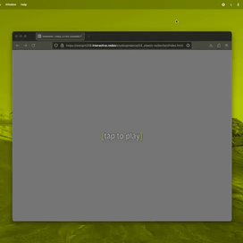

whenever i steal, a tree somewhere is blown
2024
web piece, video installation
dimensions vary
duration: 73:25, looped
exploring temporality and absurdity in relation to the value of imagery. random parings of webscraped images depicting wind-swept trees with personal and found text.

here to experience it for yourself!